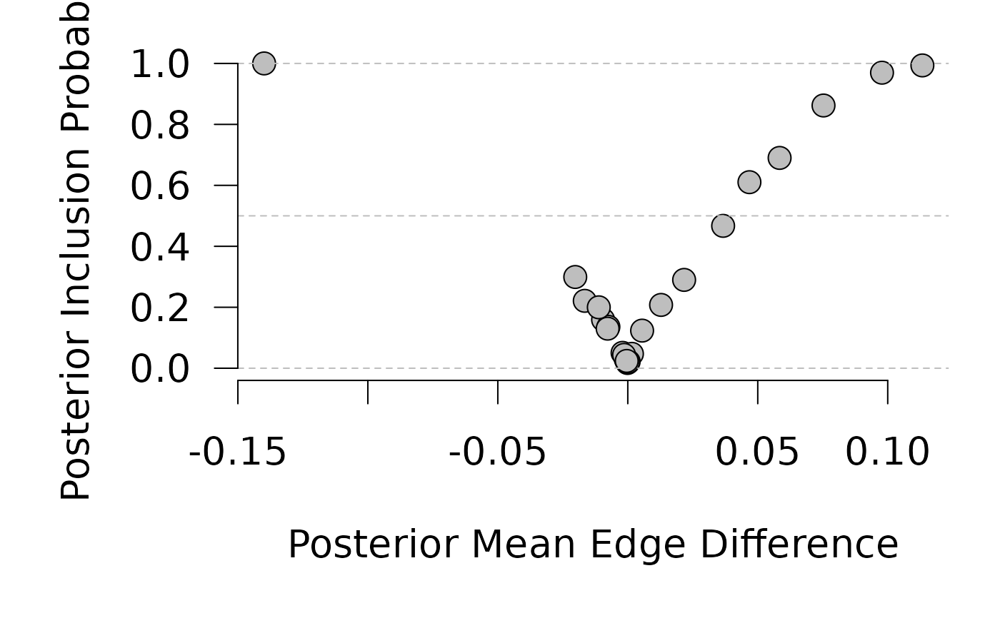
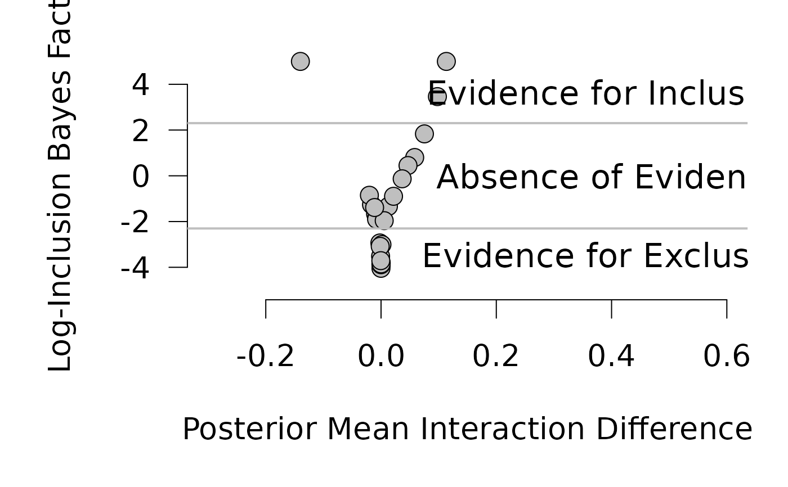
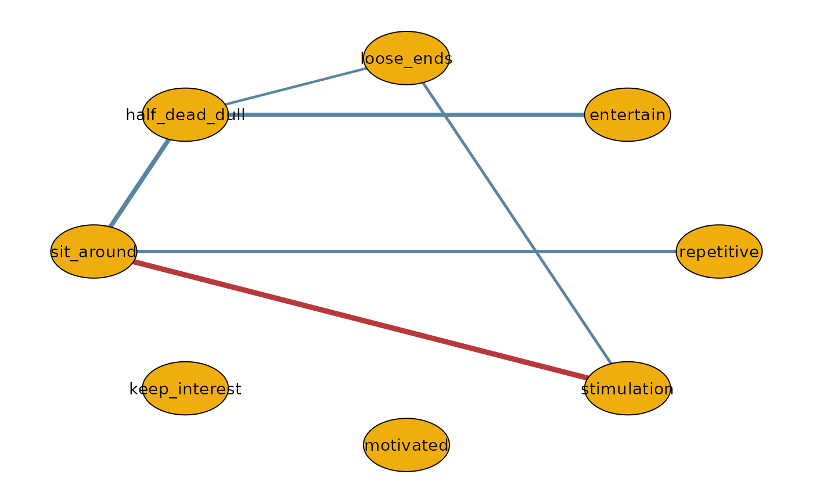

Bayesian Variable Selection or Bayesian Estimation for Differences in Markov Random Fields
Source:R/bgmCompare.R
bgmCompare.RdThe bgmCompare function estimates the pseudoposterior distribution of
the parameters of a Markov Random Field (MRF) model for mixed binary and ordinal
variables, as well as differences in pairwise interactions and category thresholds
across groups. Groups are assumed to be G independent samples.
Usage
bgmCompare(
x,
y,
g,
difference_selection = TRUE,
main_difference_model = c("Free", "Collapse", "Constrain"),
variable_type = "ordinal",
reference_category,
pairwise_difference_scale = 1,
main_difference_scale = 1,
pairwise_difference_prior = c("Bernoulli", "Beta-Bernoulli"),
main_difference_prior = c("Bernoulli", "Beta-Bernoulli"),
pairwise_difference_probability = 0.5,
main_difference_probability = 0.5,
pairwise_beta_bernoulli_alpha = 1,
pairwise_beta_bernoulli_beta = 1,
main_beta_bernoulli_alpha = 1,
main_beta_bernoulli_beta = 1,
interaction_scale = 2.5,
threshold_alpha = 0.5,
threshold_beta = 0.5,
iter = 10000,
burnin = 1000,
na_action = c("listwise", "impute"),
save = FALSE,
save_main = FALSE,
save_pairwise = FALSE,
save_indicator = FALSE,
display_progress = TRUE
)Arguments
- x
Data frame or matrix with binary and ordinal responses. Regular ordinal variables should be coded as integers starting from 0. Missing categories are collapsed for regular ordinal variables but retained for Blume-Capel variables.
- y
A data frame or matrix similar to
x, used for two-group designs.xcontains Group 1 data, andycontains Group 2 data. Ignored for multi-group designs.- g
Group membership vector for rows in
x. Required for multi-group designs; ignored ifyis provided.- difference_selection
Logical. If
TRUE, the function models the inclusion or exclusion of parameter differences. Default:TRUE.- main_difference_model
Character. Specifies how to handle threshold differences when categories are unmatched. Options:
"Collapse","Free". The option "Collapse" collapses categories unobserved in one or more groups. The option "Free" option estimates thresholds separately for each group and does not model their difference. Default:"Free".- variable_type
Character or vector. Specifies the type of variables in
x("ordinal"or"blume-capel"). Default:"ordinal".- reference_category
Integer or vector. Reference category for Blume-Capel variables. Required if there is at least one Blume-Capel variable.
- pairwise_difference_scale
Double. Scale parameter for the Cauchy prior on pairwise differences. Default:
1.- main_difference_scale
Double. Scale parameter for the Cauchy prior on threshold differences. Default:
1.- pairwise_difference_prior, main_difference_prior
Character. Specifies the inclusion probability model (
"Bernoulli"or"Beta-Bernoulli"). Default:"Bernoulli".- pairwise_difference_probability
A numeric value or a \(p \times p\) matrix specifying the prior inclusion probability of a pairwise difference in the Bernoulli model. A single value applies the same probability to all pairs, while a matrix allows for edge-specific probabilities. Default: 0.5 for equal prior probability for inclusion and exclusion.
- main_difference_probability
A numeric value or a length-\(p\) vector specifying the prior inclusion probability of a threshold difference in the Bernoulli model. A single value applies the same probability to all variables, while a vector allows for variable-specific probabilities. Default: 0.5 to indicate no prior preference.
- pairwise_beta_bernoulli_alpha, pairwise_beta_bernoulli_beta
Double. Shape parameters for the Beta-Bernoulli prior on pairwise differences.
- main_beta_bernoulli_alpha, main_beta_bernoulli_beta
Double. Shape parameters for the Beta-Bernoulli prior on threshold differences.
- interaction_scale
Double. Scale of the Cauchy prior for nuisance pairwise interactions. Default:
2.5.- threshold_alpha, threshold_beta
Double. Shape parameters for the beta-prime prior on nuisance threshold parameters.
- iter, burnin
Integer. Number of Gibbs iterations (
iter) and burn-in iterations (burnin). Defaults:iter = 1e4,burnin = 1e3.- na_action
Character. Specifies handling of missing data.
"listwise"deletes rows with missing values;"impute"imputes values during Gibbs sampling. Default:"listwise".- save
Logical. If true, sampled states for all parameters are returned. Deprecated.
- save_main, save_pairwise, save_indicator
Logical. Enable saving sampled states for
main_effects,pairwise_effects, andindicator, respectively. Default:FALSE.- display_progress
Logical. Show progress bar during computation. Default:
TRUE.
Value
A list containing the posterior means and, optionally, sampled states based on the save_* options. The returned components include:
posterior_mean_main,posterior_mean_pairwise, andposterior_mean_indicatorfor posterior means.If saving options are enabled, the list also includes:
raw_samples_main– sampled states of main effects.raw_samples_pairwise– sampled states of pairwise effects.raw_samples_indicator– sampled states of inclusion indicators.
In addition to the results of the analysis, the output lists some of the arguments of its call. This is useful for post-processing the results.
Details
This function models group differences in Markov Random Fields using a Bayesian framework. It supports binary and ordinal variables, and includes options for Bayesian variable selection on the differences in both pairwise interactions and threshold parameters. Key components are described in the sections below.
Pairwise Interactions
Pairwise interactions between variables i and j are modeled as:
$$\boldsymbol{\theta}_{ij} = \phi_{ij} + \boldsymbol{\delta}_{ij},$$
where:
\(\boldsymbol{\theta}_{ij}\) is the vector of pairwise interaction parameters of length
G.\(\phi_{ij}\) is the overall pairwise interaction (nuisance parameter).
\(\boldsymbol{\delta}_{ij}\) represents group-specific differences constrained to sum to zero for identification.
Ordinal Variables
The function supports two types of ordinal variables:
Regular ordinal variables: Introduce a threshold parameter for each category except the lowest, modeled as: $$\boldsymbol{\mu}_{ic} = \tau_{ic} + \boldsymbol{\epsilon}_{ic},$$ where:
\(\tau_{ic}\) denotes an overall effect (nuisance parameter).
\(\boldsymbol{\epsilon}_{ic}\) represents group-specific differences constrained to sum to zero.
Blume-Capel ordinal variables: Assume a specific reference category and score responses based on distance to it: $$\boldsymbol{\mu}_{ic} = (\tau_{i1} + \boldsymbol{\epsilon}_{i1}) \cdot c + (\tau_{i2} + \boldsymbol{\epsilon}_{i2}) \cdot (c - r)^2,$$ where:
ris the reference category.\(\tau_{i1}\) and \(\tau_{i2}\) are nuisance parameters.
\(\boldsymbol{\epsilon}_{i1}\) and \(\boldsymbol{\epsilon}_{i2}\) represent group-specific differences.
Variable Selection
Bayesian variable selection enables testing of parameter differences or equivalence across groups. Independent spike-and-slab priors are applied to difference parameters:
Bernoulli Model: Assigns a fixed probability to parameter inclusion.
Beta-Bernoulli Model: Incorporates a beta prior to model inclusion probabilities.
Gibbs Sampling
Parameters are estimated using a Metropolis-within-Gibbs sampling scheme.
When difference_selection = TRUE, the algorithm runs 2 * burnin warmup iterations:
First half without difference selection.
Second half with edge selection enabled.
This warmup strategy improves stability of adaptive Metropolis-Hastings proposals and starting values.
Saving Options
Users can store sampled states for parameters (main_effects, pairwise_effects, indicator) during Gibbs sampling. Enabling these options (save_main, save_pairwise, save_indicator) increases output size and memory usage, so use them judiciously.
Examples
# \donttest{
# Store user par() settings
op <- par(no.readonly = TRUE)
# Run bgmCompare on the Boredom dataset
# For publication-quality results, consider using at least 1e5 iterations
fit <- bgmCompare(x = Boredom[, -1], g = Boredom[, 1], iter = 1e4)
#--- INCLUSION VS EDGE DIFFERENCE PLOT -------------------------------------
incl_probs <- fit$posterior_mean_indicator[lower.tri(fit$posterior_mean_indicator)]
edge_diffs <- 2 * fit$posterior_mean_pairwise[, 3]
par(mar = c(5, 5, 1, 1) + 0.1, cex = 1.7)
plot(edge_diffs, incl_probs,
pch = 21, bg = "gray", cex = 1.3,
ylim = c(0, 1), axes = FALSE,
xlab = "", ylab = "")
abline(h = c(0, 0.5, 1), lty = 2, col = "gray")
axis(1); axis(2, las = 1)
mtext("Posterior Mean Edge Difference", side = 1, line = 3, cex = 1.7)
mtext("Posterior Inclusion Probability", side = 2, line = 3, cex = 1.7)

#--- EVIDENCE PLOT ----------------------------------------------------------
prior_odds <- 1
post_odds <- incl_probs / (1 - incl_probs)
log_bf <- log(post_odds / prior_odds)
log_bf <- pmin(log_bf, 5) # cap extreme values
plot(edge_diffs, log_bf,
pch = 21, bg = "#bfbfbf", cex = 1.3,
axes = FALSE, xlab = "", ylab = "",
ylim = c(-5, 5.5), xlim = c(-0.3, 0.6))
axis(1); axis(2, las = 1)
abline(h = log(c(1/10, 10)), lwd = 2, col = "#bfbfbf")
text(0.4, log(1/10), "Evidence for Exclusion", pos = 1, cex = 1.1)
text(0.4, log(10), "Evidence for Inclusion", pos = 3, cex = 1.1)
text(0.4, 0, "Absence of Evidence", cex = 1.1)
mtext("Log-Inclusion Bayes Factor", side = 2, line = 3, cex = 1.7)
mtext("Posterior Mean Interaction Difference", side = 1, line = 3, cex = 1.7)

#--- MEDIAN PROBABILITY DIFFERENCE NETWORK ----------------------------------
median_edges <- ifelse(incl_probs >= 0.5, edge_diffs, 0)
p <- ncol(Boredom) - 1
median_net <- matrix(0, nrow = p, ncol = p)
median_net[lower.tri(median_net)] <- median_edges
median_net <- median_net + t(median_net)
node_labels <- colnames(Boredom[, -1])
dimnames(median_net) <- list(node_labels, node_labels)
par(cex = 1)
if (requireNamespace("qgraph", quietly = TRUE)) {
qgraph::qgraph(median_net,
theme = "TeamFortress", maximum = 0.5, fade = FALSE,
color = "#f0ae0e", vsize = 10, repulsion = 0.9,
label.cex = 0.9, label.scale = FALSE,
labels = node_labels
)
}

# Restore user par() settings
par(op)
# }